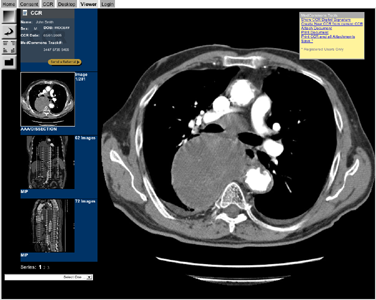
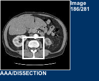
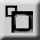
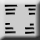

The Viewer tab is where you can view attached images and documents. To select which document, series, or image to view, click on its thumbnail on the left side of the screen, or select the name of the image from the droplist at the bottom of the screen. The document/image/series will then appear on the display to the left. If it is a series, you can scroll through the images in the series by using the scrollwheel on the mouse, or by using the Up and Down arrows on the keyboard.
Command Buttons
There are 4 command buttons at the very left of the screen
-
Zoom / Window Level Tool
The Zoom / Window Level button switches between using the Zoom tool and the Window Level tool. Click the button to change from using one tool to the other. The one displayed is the one that is active.
-
Zoom Tool

When the Zoom icon  is displayed, you are in Zoom mode. When you drag your mouse over an area of the image display, you will zoom into that area. You can see where you are in the image by looking at the white box in the thumbnail. You can also move the zoom area by dragging the white box. To zoom out, click somewhere on the thumbnail image outside the white box, or click on the reset button .
-
Window Level Tool
When the Window Level icon is displayed, you are in Window Levels mode. When you drag you mouse over an area of the image display, the display will change into a choice of 9 images of varying brightness for you to choose from. When you select a choice by clicking on it, the display will change its brightness/contrast to the setting you choose.
-
Reset
The reset button takes everything back to the defaults.
-
Overlay
The overlay button  toggles if DICOM information is displayed over the main image.
-
Desktop
The Desktop button is a link to the Desktop tab